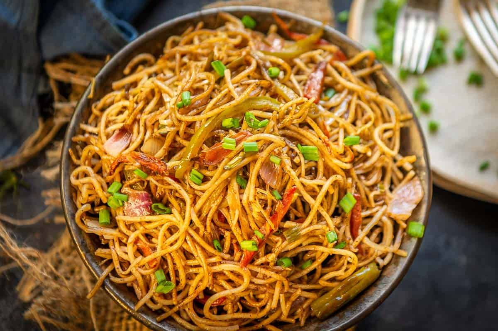

How to make Chicken Fire Hakka Noodles

Description
Hakka noodles is an Indo-Chinese dish that contain thin flour noodles, lots of veggies, soy sauce, chili sauce, and ketchup (yes, it’s traditionally used in indo-chinese street food).Instead of regular chili sauce, I used the famous Samyang chicken-flavored sauce (it is halal by the way) which elevates the dish to another level.
Very spicy! But very good! Also very unhealthy! This is a weekend meal.
Ingredients
- 8 oz hakka noodles (may substitute with lo mein or pancit noodles)
- 2 tsp ginger-garlic paste
Chicken
- 1/2 lb boneless chicken
- 1/4 c cornstarch
- 1 tsp ginger-garlic paste
- 1 Tbsp soy sauce
- 1/4 tsp black pepper
- 1/2 tsp chicken 65 masala (****optional!)
Veggies
- 1 carrot
- 1/2 bell pepper
- 1/2 c onion
- 2/3 c cabbage
Stir-fry Sauce
- 1 Tbsp soy sauce
- 3-4 Tbsp samyang chicken-flavored fire sauce
- 2 Tbsp ketchup
Steps
Chicken
- In a bowl combine the boneless chicken (cut into small cubes), soy sauce, cornstarch, black pepper, ginger-garlic paste. Feel free to add a tablespoon of water to help mix everything together.
- Shallow fry the pieces until they become a deep golden brown.
- Set the fried chicken pieces aside. Remove some of the oil from the wok. The rest we'll keep to make the rest of the stir-fry.
Stir-fry
- Combine all the sauce ingredients (soy sauce, ketchup, fire sauce) and set aside.
- Julienne the veggies (cut into strips). Fry in a wok for a few minutes until softened. Add a little bit of the stir-fry sauce and toss. Remove and set aside for now.
- Now add some ginger-garlic paste to the wok and cook for a minute. Then add your noodles (make sure you boil them to package instructions).
- Add the stir-fry sauce. Cook until the sugars in the sauce begin to slightly caramelize around the noodles.
- Toss the veggies and chicken back into the wok and combine. Make sure the sauce coats everything. Serve.